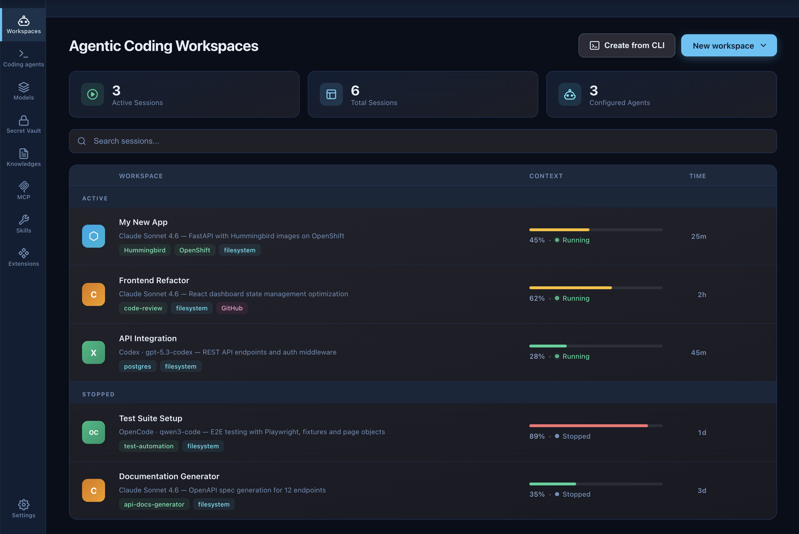
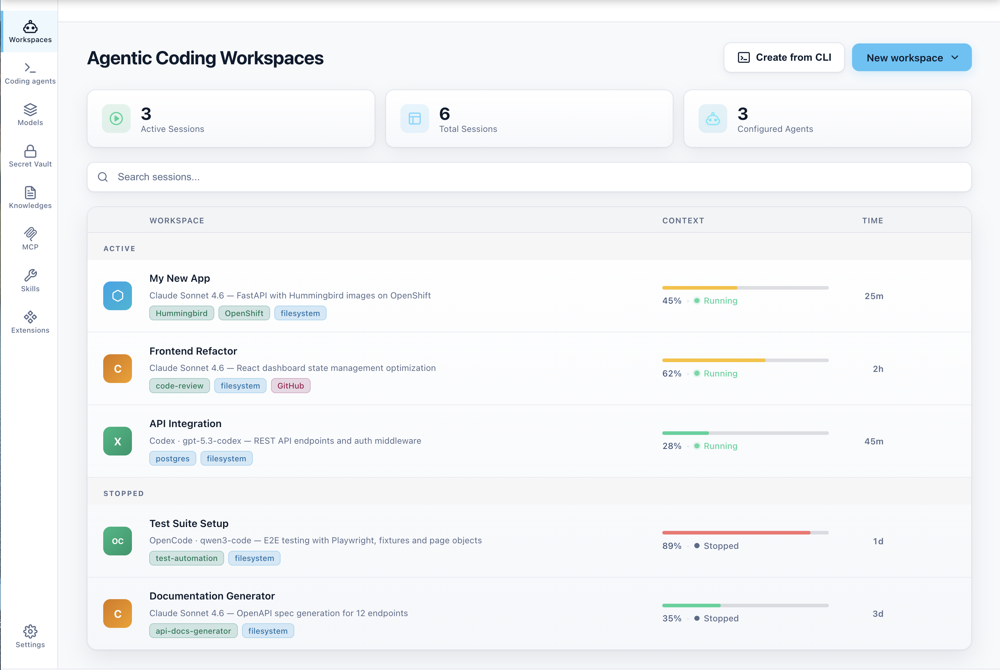
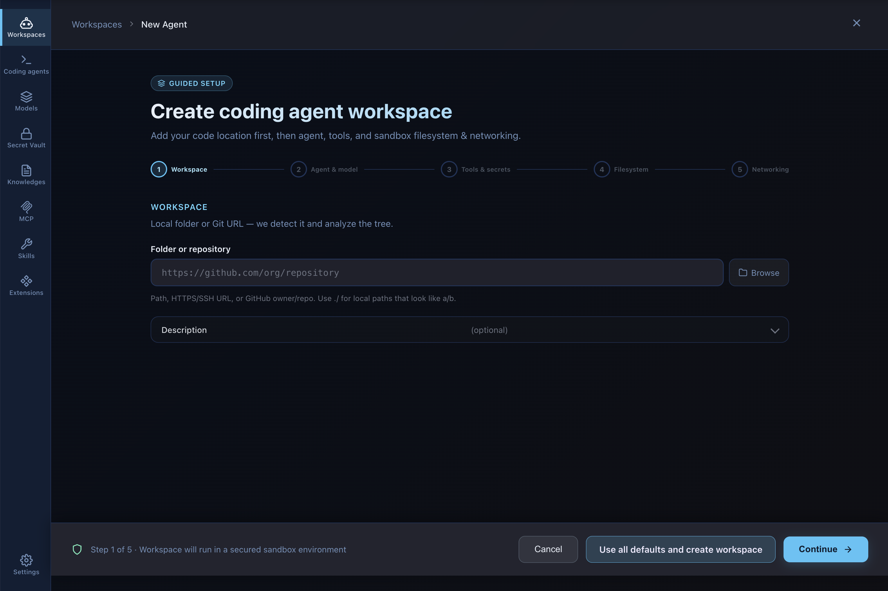
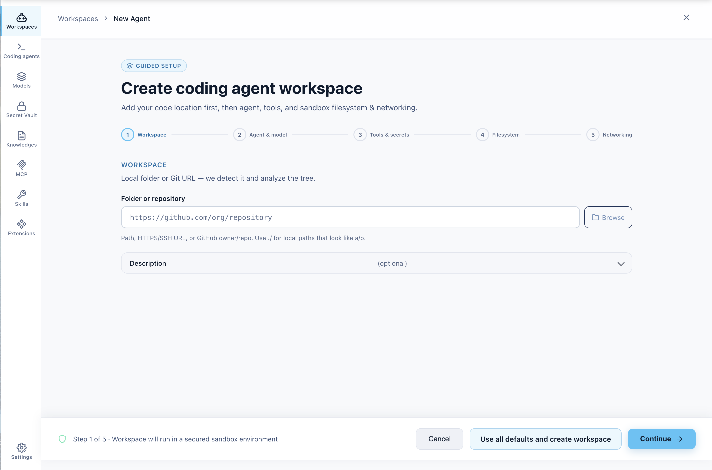
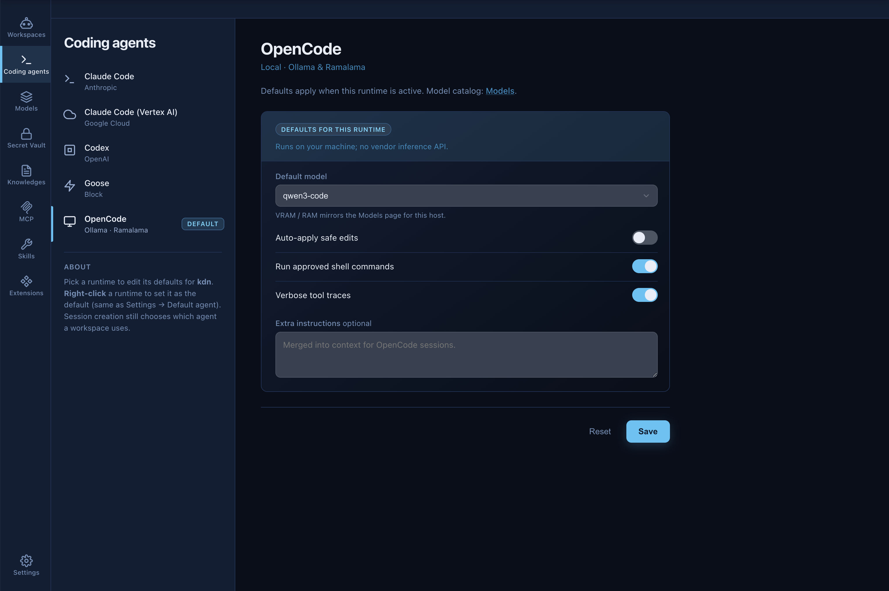
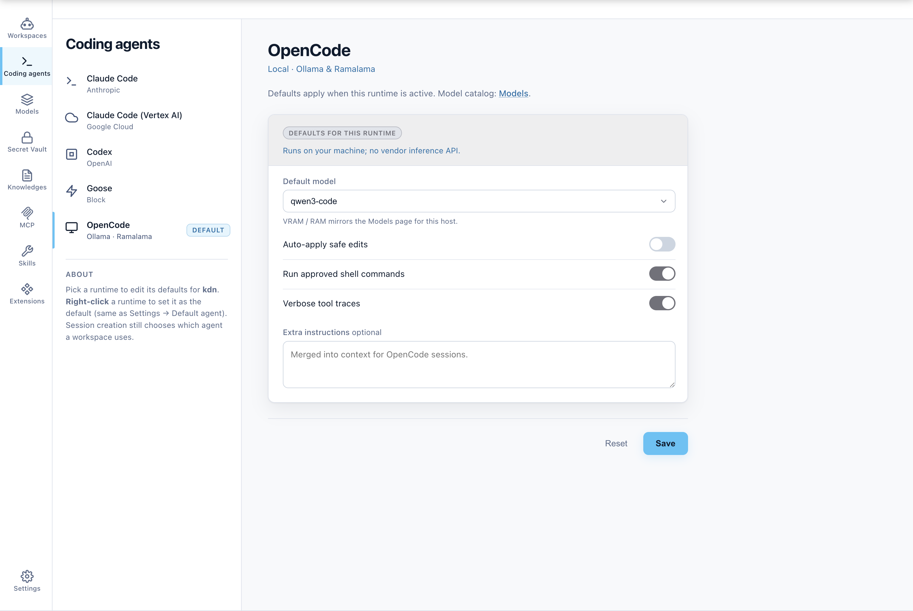

Desktop App for Agentic Development
Run AI agents safely.
On your terms.
Kaiden runs your coding agents in isolated sandboxes and equips them with the models, tools, and assets they need. Repeatable, preconfigured environments to iterate faster. Experiment safely. Works locally or in your enterprise environment. Built for developers, governed by your platform team.
macOS · Linux · Windows — free, open source


Why Kaiden
Built for developers juggling multiple agents
One place for all your agents
Running Claude Code on one task, OpenCode on another, something else in the background. Kaiden gives you a single view across every session.


Click go, not configure
Define a workspace once: pick the model, load the MCP servers, attach your skills and context. Every time you start a session, the agent has exactly what it needs from the first prompt.


Any agent, same setup
Kaiden doesn't replace the agents you use today. It wraps around them so your workspace config, secrets, and tools travel with you.
Core principles
Adopt AI agents safely, at any scale
Safe by design
AI agents touch your code, your tools, your credentials. One bad session can cause real damage. Kaiden runs every agent in its own sandbox, a container backed by Podman or a microVM powered by libkrun, so the rest of your system stays untouched.
Enterprise connected
A generic AI tool starts from zero every time. Kaiden connects your agents to the tools, APIs, and knowledge that already exist in your organization, so they actually understand the context they're working in.
Local to remote, your choice
Run agents locally when you need speed or privacy. Switch to a remote environment when you need more power. Kaiden handles both without changing how you work.
How it works
From install to safe AI coding in minutes
Install & configure
Install Kaiden application and follow the flow to configure your coding agents, secrets, connect model providers (local or remote), and import your existing MCP servers and skills. Kaiden is ready to orchestrate your coding agents.
Create an AI Agentic workspace
Spin up a coding workspace for your project. You choose the coding agent you want, pick the tools it needs and equip the agent with the skills and MCP servers already in your environment. Run multiple agents in parallel, each in its own sandbox.
Code with confidence
Use your coding agent the same way you always have, straight from the CLI. The agent runs inside a sandbox, so the blast radius stays contained. You stay in control of what it can reach. No more worrying about what it might accidentally break.
Capabilities
Everything you need to run agents at scale
Isolated sandboxes
Each agent session runs in its own container powered by Podman or in a microVM powered by libkrun. Hardware-isolated from your host, reproducible, and ephemeral by default.
Open by design
Use frontier models and coding agents like Claude Code or Codex, or go fully open source with local models and agents like OpenCode or Goose. No lock-in.
Devcontainer support
Devcontainers let you predefine repeatable environments that automatically equip the agent with the right dev tools inside its sandbox.
Secret vault
Store API keys, tokens, and credentials scoped to workspaces or projects. Secrets are injected at runtime, never exposed directly to the agent.
Hybrid compute
Tasks that don't need a large model run locally. Heavier workloads route to remote environments. Semantic routing picks the right compute automatically based on what the agent actually needs.
Enterprise governance
Platform engineers define which models, MCP servers, skills, and context are permitted. Governance is enforced through the workspace config.
For platform teams
IT controls what developers can run.
Security and Platform teams set the rules once: which models, secrets, tools, and MCP servers are permitted. Then developers can build and run agents without needing to ask for permissions every time. Connect to governance platforms that manage AI Assets.
- Define allowed model providers
- Curate and distribute skills across teams
- Manage MCP servers & tools
- Enforce governance via workspace config
Engineer
Open source
Built in the open.
Auditable by design.
Kaiden is built by the team behind Podman Desktop, with over 4 million downloads. Same foundations, same philosophy: open source, extensible, and yours to run however you want.
The sandboxes that protect your agent sessions are built backed by Podman and libkrun microVMs — the same stacks trusted by millions of developers, now securing your AI agents.
Get started
Install in seconds
Need help? Read the docs on GitHub.